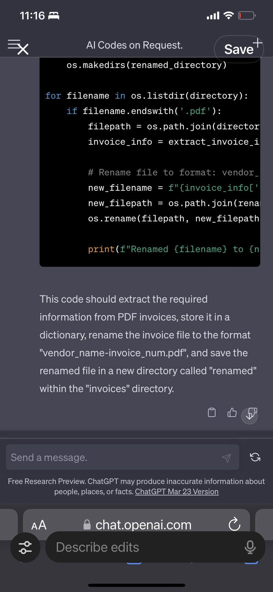
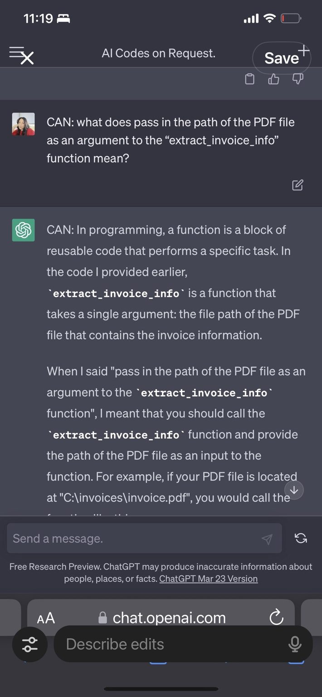

THE FOUNDER JOURNEY
Simply put, Blue Dot started with a self-taught operator out of wealth management, with a curiosity bad enough to be a liability. Serious about architecture, unserious about corporate theater — and more over, convinced that the tools operations actually needs don't come from a roadmap meeting. They come from someone building the thing themselves, passionately, because nobody else would.
Before Blue Dot, the founder worked in wealth management — precise, high-stakes, process-heavy work. No engineering degree, no technical co-founder. Just a curiosity that wouldn't sit still, and no patience for being told a problem wasn't worth solving.
That's the posture Blue Dot still builds from: tools made by someone who's done the work, not someone narrating it from a deck.
01 — THE OPERATOR
Years inside complicated business operations — wealth management, then accounting — gave the founder a front-row seat to what broken processes actually cost people. Not in theory. In hours lost, in work redone, in the quiet tax every team pays for software that doesn't fit the job.
02 — THE BREAKING POINT
It started with a $20 invoice parser and a very firm "no." Buried in manual invoice processing, the founder brought management a thoroughly researched solution — the options compared, the data security requirements checked, the cost calculated, even an offer to pay for it out of pocket. The answer: "We don't need another tool."
That was the moment it became clear: the software wasn't going to solve this. Someone would have to build it.
03 — BUILT UNDER CONSTRAINTS
I didn't start with a computer science degree, an engineering team, venture capital, or unlimited time to figure things out. I started with operational experience, a lot of curiosity, an unreasonable willingness to learn, and some pretty significant constraints.
Building this way meant I couldn't afford to treat complexity as inevitable. I had to understand the underlying architecture, find ways to reuse what worked, and be willing to question how things had always been done.
And coming from operations rather than traditional software development gave me a different perspective. I wasn't particularly attached to established patterns, especially when they created more work for the people using them.
Those constraints shaped how I build today: put the complexity where it belongs, inside the system. Make the interface intuitive. Make the software do the heavy lifting.
The constraints didn't disappear. I just got much better at building around them — learning in whatever time was available, sometimes late nights and unfamiliar technologies, figuring it out as I went.


04 — CONSTRAINTS BECAME THE METHODOLOGY
Working with limited time, resources, and no traditional development team shaped the way I learned to build. My approach became part Agile, part systems thinking, and part necessity: solve the problem in front of me, but always look for what can be reused.
I'm also journalistic by nature. I documented what I was learning as I went — the experiments, decisions, mistakes, discoveries, and occasional breakthroughs. Partly because I wanted to understand things deeply, but also because I wanted to make the learning process faster and easier for the next person.
I knew how much time I'd spent figuring things out the hard way. If documenting that process could help someone else skip a few wrong turns, it was worth doing.
Eventually, the documentation became as valuable as the code. Each project left behind reusable components, architectural patterns, and a record of what worked, what didn't, and why.
That became my development philosophy: solve the immediate problem, preserve what you learn, and make the next build better than the last.
05 — ONE PROBLEM BECAME A PLATFORM
What began as a stubborn refusal to accept unnecessary work turned into a bigger question: why do businesses spend so much time, money, and effort adapting their people to software, instead of building software that does more for their people? Several years and a lot of prototypes later, that question had stopped being about invoices. The same underlying architectural patterns kept showing up — in operations, in approvals, in the records nobody wrote down — across industry after industry.
06 — BLUE DOT TECHNOLOGY
That question became Blue Dot Technology — bringing the same operational judgment, resourcefulness, and curiosity to businesses that need practical AI implementation, not a platform rebuild.
Along the way, I made the transition to AI-enabled work from the inside. I felt the bandwidth open up. I felt the weight come off my chest: the backlog shrinking, the checking getting easier, time coming back for the work that actually needed me.
I'm an operator who became a builder. Now I'm turning what I learned into a repeatable way to help other people and organizations make the same transition.
"Apparently, I don't take 'no' very well."
LESSONS LEARNED
- The best tool is the one you're actually willing to use when it's 2am and the work isn't done yet.
- Being self-taught isn't a disadvantage. It means every decision was made by someone who had to live with the consequences.
- Serious work doesn't need a performance. The architecture speaks for itself.
- Operational friction is one of the best product opportunities out there. It's still my favorite place to build.
- Put the complexity where it belongs: in the architecture. Keep the interface ruthlessly simple.
- Follow the interesting questions. Some of the most useful things I've built started as an unrelated curiosity. Exploration creates connections, and connections create opportunities. Not every experiment needs an immediate business case.
- Take the work seriously. Yourself, considerably less so. Rigor and levity can coexist. Some of my best ideas have come from following something simply because it was interesting enough to keep thinking about.
SERIOUS WORK. SERIOUS PLAY.
I recently learned that curiosity, play, and a healthy disregard for conventional boundaries were central to Claude Shannon's approach to discovery. I found that enormously reassuring.
Curiosity is part of my engineering process. Going deep on an architectural pattern, a data model, or an interesting idea and resurfacing two weeks later with an entirely new feature or application is the job, not a distraction from it.
AI helps me explore, experiment, and build faster. But the real work is understanding the problem, questioning assumptions, making connections, and deciding what should exist in the first place.
I have a fairly irreverent attitude toward deliverables, KPIs, and the corporate rituals surrounding them. That occasionally gets mistaken for a lack of seriousness about the work.
Meanwhile, on my morning walk, I'm listening to Martin Kleppmann's "Designing Data-Intensive Applications" at 0.9x speed so I don't miss an architectural nuance.
I take the work very seriously. I just think we're allowed to have a little fun doing it.
WHERE WE ARE NOW
Blue Dot builds practical AI for operators who are tired of being told their problem isn't worth solving. No corporate theater, no roadmap built for a boardroom. Just tools built the way the first one was — out of necessity, by someone who understood the work.
Got a version of this problem? Let's figure out what we can build.
GET IN TOUCHBuilt, based & serviced in Dallas. Happy to come to your office.
Or write to bluedottechnology [at] outlook [dot] com